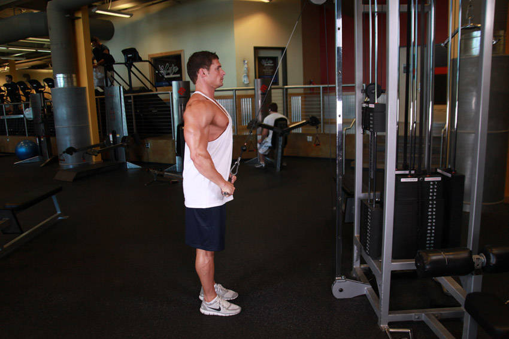

- You will start by grabbing the wide bar from the top pulley of a pulldown machine and using a wider than shoulder-width pronated (palms down) grip. Step backwards two feet or so.
- Bend your torso forward at the waist by around 30-degrees with your arms fully extended in front of you and a slight bend at the elbows. If your arms are not fully extended then you need to step a bit more backwards until they are. Once your arms are fully extended and your torso is slightly bent at the waist, tighten the lats and then you are ready to begin.
- While keeping the arms straight, pull the bar down by contracting the lats until your hands are next to the side of the thighs. Breathe out as you perform this step.
- While keeping the arms straight, go back to the starting position while breathing in.
- Repeat for the recommended amount of repetitions.